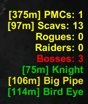

BotCounter
- Downloads
- 3,657
- Favourites
- 25
- Mod lists
- 17
Hello :)
I needed this mod but i can´t code so i did it with AI. This mod displays all bots in your current raid and adds some new features.
BotCounter: Key Features
Real-Time Enemy Monitoring: Actively tracks the total number of bots and bosses currently present in your raid.
Precision Distance Tracking: Provides the exact distance, in meters, to the nearest enemy within each category.
Boss Health Monitoring: Displays real-time boss health status, allowing you to track exactly how much damage they have sustained.
Selective Visibility & Smart Filtering: Total control over your UI layout:
Group Filtering: Manually toggle specific enemy types on or off based on your needs.
Auto-Hide Functionality: Automatically conceals empty categories to maintain a clean, minimalist, and unobtrusive HUD.
Customizable Visuals: Fully personalize the overlay by choosing your preferred text color and adjusting the opacity to fit your playstyle.
Reliable Detection: Advanced logic accurately identifies active targets and instantly filters out eliminated enemies, including Player Scavs, to prevent “ghost counts”.
Intelligent Categorization: Automatically differentiates between various bot roles to provide a clear, organized overview of immediate threats.
New Version 1.9.0
- (Player Scav Fix) & Source Code Fix (GitHub)
Features (1.8.0):
Distance Tracking: The UI now displays the exact distance (in meters) to the closest bot within each category. [!This option could reduce your performance!] [Solution: Change refresh rate or deactivate this option.]
Detailed Boss & Guard Names: Instead of grouping all bosses into a single number, the mod now translates internal entity names to display exactly who is on the map.
Dynamic Boss Health: Boss names will now dynamically change color based on their remaining health percentage across all body parts.
(Green for =/> 70%, Yellow for =/> 40%, Orange for =/> 10%, Red for <10%). Hide Zero Counts: Categories with zero active bots will be completely hidden to keep your screen clean and focused.
UI & Customization:
Categorized Settings: The F12 configuration menu has been completely reorganized into clean sections (1. Visibility, 2. Display, 3. Colors) for easier navigation.
Custom Colors & Transparency: You can now set a custom global text color instead of being locked to green, and adjust the overall UI opacity to make the text as visible or subtle as you prefer.
Performance:
Improved Tracking Accuracy: Switched the underlying data source to the game’s internal BotsController to provide more reliable spawns and counts.
True Dead Bot Handling: The mod now accurately identifies and filters out dead bots using a dedicated tracking list, preventing ghost counts.
Optimized Scanning: Introduced smart dictionary caching. The mod now remembers a bot’s role and faction after the initial scan, saving CPU cycles by not repeatedly analyzing the same entities every update tick.
-
F12 for configuration.
-
Like almost every mod here, extract the zip archive into your SPT directory: \SPT\BepInEx\plugins\BotCounter
-
To uninstall, simply delete the BotCounter Folder from \SPT\BepInEx\plugins\
-
This mod can be uninstalled at any time without affecting your profile.
Version
1.9.0
- Fixed “Player Scav” shown as boss.
- Fixed structure & source code on GitHub (1.8.0 is wrong)